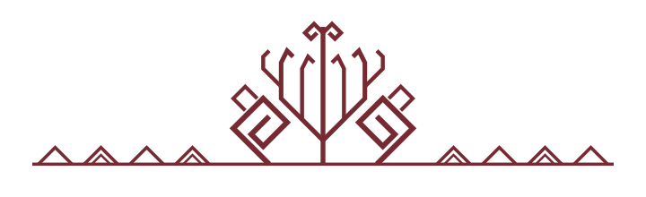

<!DOCTYPE html>
<html lang="ru">
<head>
<meta charset="utf-8">
<meta name="viewport" content="width=device-width, initial-scale=1">
<title>Карта топонимов</title>
<style>
  :root {
    --bg: #eef1ee;
    --panel: #f8faf8;
    --ink: #1c2823;
    --muted: #5b6b64;
    --line: #cdd7d1;
    --accent: #2c6a4f;
    color-scheme: light dark;
  }
  @media (prefers-color-scheme: dark) {
    :root {
      --bg: #151b18;
      --panel: #1c2420;
      --ink: #e4ebe7;
      --muted: #94a59c;
      --line: #33403a;
      --accent: #6fc19a;
    }
  }
  * { box-sizing: border-box; }
  html, body { height: 100%; margin: 0; }
  body {
    display: grid;
    grid-template-columns: 320px 1fr;
    background: var(--bg);
    color: var(--ink);
    font: 15px/1.45 system-ui, -apple-system, "Segoe UI", Roboto, sans-serif;
  }

  aside {
    background: var(--panel);
    border-right: 1px solid var(--line);
    display: flex;
    flex-direction: column;
    min-height: 0;
  }
  header {
    display: flex;
    flex-direction: column;
    gap: 8px;
    padding: 14px 20px;
    border-bottom: 1px solid var(--line);
  }
  h1 {
    margin: 0;
    font: 600 24px/1.15 "Iowan Old Style", "Palatino Linotype", Georgia, serif;
    overflow-wrap: anywhere;
  }
  #count { grid-column: 1 / -1; margin: 0; color: var(--muted); font-size: 14px; }

  /* Переключатель языка */
  .lang { display: flex; align-self: flex-end; order: -1; border: 1px solid var(--line); border-radius: 7px; overflow: hidden; }
  .lang button {
    font: inherit; font-size: 13px; color: var(--ink);
    background: none; border: 0; padding: 4px 9px; cursor: pointer;
  }
  .lang button + button { border-left: 1px solid var(--line); }
  .lang button[aria-pressed="true"] { background: var(--accent); color: #fff; }
  @media (prefers-color-scheme: dark) { .lang button[aria-pressed="true"] { color: #10201a; } }
  .lang button:focus-visible { outline: 2px solid var(--accent); outline-offset: -2px; }

  /* Узор */
  .ornament {
    background: #f7f4f1;
    border-bottom: 1px solid var(--line);
    padding: 10px 14px;
  }
  .ornament img { display: block; width: 100%; height: auto; }
  aside.collapsed .ornament { display: none; }

  /* Кнопка «Предложить топоним» */
  .add {
    display: block; margin: 12px 20px; padding: 10px 14px;
    text-align: center; text-decoration: none; font-weight: 600;
    background: var(--accent); color: #fff; border-radius: 8px;
  }
  .add:hover { filter: brightness(1.08); }
  .add:focus-visible { outline: 2px solid var(--ink); outline-offset: 2px; }
  .add[hidden] { display: none; }
  @media (prefers-color-scheme: dark) { .add { color: #10201a; } }

  .tools { display: flex; gap: 8px; padding: 10px 20px; border-bottom: 1px solid var(--line); }
  .tools button {
    font: inherit; font-size: 13px; color: var(--accent);
    background: none; border: 1px solid var(--line); border-radius: 6px;
    padding: 4px 10px; cursor: pointer;
  }
  .tools button:hover { border-color: var(--accent); }

  #types { list-style: none; margin: 0; padding: 6px 12px 16px; overflow-y: auto; flex: 1; }
  #types label {
    display: flex; align-items: center; gap: 10px;
    padding: 7px 8px; border-radius: 6px; cursor: pointer;
  }
  #types label:hover { background: color-mix(in srgb, var(--accent) 10%, transparent); }
  #types input { accent-color: var(--accent); width: 16px; height: 16px; }
  .t-icon { width: 22px; text-align: center; font-size: 17px; }
  .t-name { flex: 1; }
  .t-num { color: var(--muted); font-size: 13px; font-variant-numeric: tabular-nums; }
  li.empty .t-name, li.empty .t-icon { opacity: .45; }

  #map { height: 100%; min-height: 0; }
  #status {
    position: absolute; z-index: 1000; left: 340px; right: 20px; top: 16px;
    padding: 10px 14px; border-radius: 8px;
    background: var(--panel); border: 1px solid var(--line);
    box-shadow: 0 2px 10px rgba(0,0,0,.15);
  }
  #status[hidden] { display: none; }

  /* Значок на карте */
  .pin {
    width: 34px; height: 34px;
    display: grid; place-items: center;
    background: #ffffff;
    border: 2px solid #2c6a4f;
    border-radius: 50%;
    box-shadow: 0 2px 6px rgba(0,0,0,.35);
    font-size: 18px; line-height: 1;
  }

  /* Всплывающее окно */
  .b-type { margin: 0 0 2px; font-size: 13px; color: #5b6b64; }
  .b-name { margin: 0 0 6px; font: 600 18px/1.2 "Iowan Old Style", Georgia, serif; color: #1c2823; }
  .b-desc { margin: 0; color: #1c2823; font: 14px/1.45 system-ui, sans-serif; }
  .b-actions { display: flex; flex-wrap: wrap; gap: 8px; margin-top: 8px; }
  .b-link, .b-btn {
    font: 600 13px/1.2 system-ui, sans-serif; padding: 7px 10px; border-radius: 6px;
    border: 1px solid #2c6a4f; background: #2c6a4f; color: #fff;
    text-decoration: none; cursor: pointer;
  }
  .b-btn { background: #fff; color: #2c6a4f; }
  .hint { margin: 0 20px 12px; font-size: 13px; color: var(--muted); }
  .opt { display: flex; align-items: center; gap: 10px; margin: 0 20px 8px; cursor: pointer; font-size: 14px; }
  .opt input { accent-color: var(--accent); width: 16px; height: 16px; margin: 0; }

  @media (max-width: 760px) {
    body { grid-template-columns: 1fr; grid-template-rows: auto 1fr; }
    aside { border-right: 0; border-bottom: 1px solid var(--line); max-height: 46vh; }
    aside.collapsed #types, aside.collapsed .tools, aside.collapsed .opt, aside.collapsed .hint { display: none; }
    header {
      display: grid;
      grid-template-columns: minmax(0, 1fr) auto;
      align-items: start;
      gap: 6px 12px;
      cursor: pointer;
      padding: 12px 16px;
    }
    .lang { order: 0; align-self: auto; }
    h1 { font-size: 20px; }
    #status { left: 16px; top: auto; bottom: 16px; }
  }
</style>
</head>
<body>

<aside id="side">
  <header id="head">
    <h1 id="title"></h1>
    <div class="lang" id="lang" role="group" aria-label="Язык / Чӗлхе">
      <button type="button" data-lang="ru">Русский</button>
      <button type="button" data-lang="cv">Чӑвашла</button>
    </div>
    <p id="count"></p>
  </header>
  <div class="ornament" aria-hidden="true"></div>
  <a id="add" class="add" href="#" target="_blank" rel="noopener"></a>
  <label class="opt"><input type="checkbox" id="pickToggle"><span id="pickLabel"></span></label>
  <p id="hint" class="hint"></p>
  <div class="tools">
    <button type="button" id="all"></button>
    <button type="button" id="none"></button>
  </div>
  <ul id="types"></ul>
</aside>

<div id="map" role="application"></div>
<div id="status" hidden></div>

<script>
/* ================== НАСТРОЙКИ ================== */

// Ключ Яндекс Карт (кабинет разработчика, продукт «JavaScript API и HTTP Геокодер»)
const YANDEX_KEY = '0904c216-9d48-4c01-9fdb-daa4bf61b96c';

// Адрес веб-приложения Apps Script (заканчивается на /exec)
const DATA_URL = 'https://script.google.com/macros/s/AKfycbyKzNW0mcK-gcd_JOwZ6L8i89310FG_Y4zXhfE0kSTTyllEh7wCT0PmZu9lvpweo2Iu/exec';

// Ссылки на форму. Для чувашского можно указать отдельную форму;
// если оставить пустым, будет использована русская.
const FORM_URLS = {
  ru: 'https://docs.google.com/forms/d/e/1FAIpQLScBFj6w1t2vVsiYipM7D56J1QSOw7-cZ3fkkbZqpxaRhSj55w/viewform',
  cv: '',
};

// Номер поля «Координаты» в форме, чтобы координаты клика подставлялись в форму сами.
// Как его найти, написано в инструкции. Вид: 'entry.1234567890'. Пусто = не подставлять.
const FORM_ENTRY = {
  ru: '',
  cv: '',   // пусто = берётся значение для ru
};

// Центр и масштаб карты, пока нет точек. Центр: [широта, долгота]
const DEFAULT_VIEW = { center: [55.75, 37.62], zoom: 5 };

// Виды топонимов. name должен ТОЧНО совпадать с вариантом в выпадающем списке формы
// (форма остаётся на русском), а подписи для сайта задаются ниже в I18N.
const TYPES = [
  { name: 'Родник, ключ',                    icon: '💧' },
  { name: 'Ручей, река',                     icon: '🌊' },
  { name: 'Озеро, пруд, старица',            icon: '🏞️' },
  { name: 'Болото',                          icon: '🌿' },
  { name: 'Овраг, балка, лог',               icon: '🕳️' },
  { name: 'Холм, гора, косогор',             icon: '⛰️' },
  { name: 'Лес, роща',                       icon: '🌲' },
  { name: 'Поле, луг, покос',                icon: '🌾' },
  { name: 'Приметное дерево',                icon: '🌳' },
  { name: 'Камень, валун',                   icon: '🪨' },
  { name: 'Брод, мост, переправа',           icon: '🌉' },
  { name: 'Дорога, тропа',                   icon: '🥾' },
  { name: 'Колодец',                         icon: '🪣' },
  { name: 'Часть селения (улица, конец)',    icon: '🏘️' },
  { name: 'Усадьба, двор, починок',          icon: '🏠' },
  { name: 'Мельница, промысловое место',     icon: '⚙️' },
  { name: 'Кладбище, могила',                icon: '🪦' },
  { name: 'Святое место, часовня, крест',    icon: '⛪' },
  { name: 'Курган, городище',                icon: '🗿' },
  { name: 'Другое',                          icon: '📍' },
];

/* ================== ТЕКСТЫ САЙТА ==================
   Чтобы поправить перевод, меняйте строки справа от двоеточий.
   Если для вида топонима нет перевода в types, будет показано русское название.
   Названия и описания топонимов, которые ввели люди, не переводятся. */

const I18N = {
  ru: {
    htmlLang: 'ru',
    title: 'Карта топонимов',
    loading: 'Загрузка…',
    showAll: 'Показать все',
    hideAll: 'Скрыть все',
    add: 'Предложить топоним',
    count: 'Топонимов на карте: {n}',
    empty: 'Пока нет одобренных топонимов',
    loadError: 'Не удалось загрузить данные',
    loadErrorLong: 'Не удалось загрузить карту или топонимы. Обновите страницу или зайдите позже.',
    notConfigured: 'Страница не настроена',
    notConfiguredLong: 'В файле index.html нужно заменить YANDEX_KEY на ключ Яндекс Карт и DATA_URL на адрес веб-приложения Apps Script.',
    mapLabel: 'Карта топонимов',
    hint: 'Нажмите правой кнопкой мыши на карту, чтобы скопировать координаты места',
    hintTouch: 'Нажмите на карту, чтобы скопировать координаты места',
    pickToggle: 'Координаты по правой кнопке мыши',
    pickToggleTouch: 'Координаты по нажатию на карту',
    copied: '✓ Координаты скопированы',
    copyFailed: 'Не удалось скопировать автоматически. Выделите координаты и скопируйте вручную.',
    copyBtn: 'Копировать',
    suggestHere: 'Предложить топоним здесь',
    types: {},
  },
  cv: {
    htmlLang: 'cv',
    title: 'Топонимсен картти',
    loading: 'Кӗтӗр…',
    showAll: 'Пурне те кӑтарт',
    hideAll: 'Пурне те пытар',
    add: 'Топоним сӗн',
    count: 'Топонимсен шучӗ: {n}',
    empty: 'Халлӗхе ырланӑ топоним ҫук',
    loadError: 'Данньӑйсене тиевлеймерӗмӗр',
    loadErrorLong: 'Карта е топонимсем тиевленмерӗ. Страницӑна ҫӗнӗрен уҫӑр.',
    notConfigured: 'Страница хатӗрлемен',
    notConfiguredLong: 'index.html файлра YANDEX_KEY тата DATA_URL ҫине хӑвӑрӑн ключпа адреса лартмалла.',
    mapLabel: 'Топонимсен картти',
    hint: 'Вырӑн координатисене илме картӑна сылтӑм кнопкӑпа пусӑр',
    hintTouch: 'Вырӑн координатисене илме картӑна пусӑр',
    pickToggle: 'Координатӑсем сылтӑм кнопкӑпа',
    pickToggleTouch: 'Координатӑсем картӑна пусса',
    copied: '✓ Копире илнӗ',
    copyFailed: 'Хӑех копире илеймерӗмӗр. Координатӑсене алӑпа копирелӗр.',
    copyBtn: 'Копире',
    suggestHere: 'Ку вырӑна топоним сӗн',
    types: {
      'Родник, ключ': 'Ҫӑл',
      'Ручей, река': 'Юхан шыв',
      'Озеро, пруд, старица': 'Кӳлӗ, пӗве',
      'Овраг, балка, лог': 'Ҫырма',
      'Холм, гора, косогор': 'Ту, сӑрт',
      'Лес, роща': 'Вӑрман',
      'Поле, луг, покос': 'Ана, ҫаран',
      'Приметное дерево': 'Паллӑ йывӑҫ',
      'Камень, валун': 'Чул',
      'Брод, мост, переправа': 'Кӗпер, каҫмалли',
      'Дорога, тропа': 'Ҫул, сукмак',
      'Часть селения (улица, конец)': 'Ял пайӗ (урам)',
      'Усадьба, двор, починок': 'Ҫурт-йӗр',
      'Мельница, промысловое место': 'Арман',
      'Кладбище, могила': 'Масар',
      'Святое место, часовня, крест': 'Сӑваплӑ вырӑн',
      'Другое': 'Ытти',
      // Для остальных видов (болото, колодец, курган) переводы не заданы.
      // Добавьте их сюда по образцу, например:  'Болото': '...',
    },
  },
};

/* ================== КОД ================== */

const FALLBACK_ICON = '📍';
// На телефонах и планшетах правой кнопки нет, поэтому там координаты берутся обычным нажатием
const IS_TOUCH = matchMedia('(pointer: coarse)').matches;
const iconOf = name => (TYPES.find(t => t.name === name) || {}).icon || FALLBACK_ICON;

const statusEl = document.getElementById('status');
const countEl = document.getElementById('count');
const typesEl = document.getElementById('types');
const addEl = document.getElementById('add');

const groups = new Map();      // вид -> коллекция меток
const counts = new Map();      // вид -> число точек
const visible = new Map();     // вид -> показан ли на карте
const placemarks = [];         // { pm, p } для обновления подписей при смене языка
let map = null;

/* ----- Язык ----- */

function pickLang() {
  try {
    const q = new URLSearchParams(location.search).get('lang');
    if (q && I18N[q]) return q;
  } catch (e) {}
  try {
    const saved = localStorage.getItem('lang');
    if (saved && I18N[saved]) return saved;
  } catch (e) {}
  const prefs = navigator.languages || [navigator.language || 'ru'];
  return prefs.some(l => String(l).toLowerCase().startsWith('cv')) ? 'cv' : 'ru';
}

let lang = pickLang();
let countState = { key: 'loading', n: 0 };

// Включена ли выдача координат по клику; выбор запоминается в браузере
function loadPick() {
  try { return localStorage.getItem('pick') !== '0'; } catch (e) { return true; }
}
let pickEnabled = loadPick();
let statusKey = null;

function t(key, vars) {
  let s = (I18N[lang] && I18N[lang][key]);
  if (s === undefined) s = I18N.ru[key];
  if (s === undefined) s = key;
  if (vars) for (const k in vars) s = s.replace('{' + k + '}', vars[k]);
  return s;
}

const typeLabel = name => (I18N[lang].types && I18N[lang].types[name]) || name;

function applyTexts() {
  document.documentElement.lang = t('htmlLang');
  document.title = t('title');
  document.getElementById('title').textContent = t('title');
  document.getElementById('all').textContent = t('showAll');
  document.getElementById('none').textContent = t('hideAll');
  document.getElementById('map').setAttribute('aria-label', t('mapLabel'));
  const hintEl = document.getElementById('hint');
  hintEl.textContent = t(IS_TOUCH ? 'hintTouch' : 'hint');
  hintEl.hidden = !pickEnabled;
  document.getElementById('pickLabel').textContent = t(IS_TOUCH ? 'pickToggleTouch' : 'pickToggle');
  document.getElementById('pickToggle').checked = pickEnabled;
  addEl.textContent = t('add');

  const url = FORM_URLS[lang] || FORM_URLS.ru || '';
  if (url.startsWith('http')) { addEl.href = url; addEl.hidden = false; } else { addEl.hidden = true; }

  countEl.textContent = countState.key === 'count' ? t('count', { n: countState.n }) : t(countState.key);
  if (statusKey) statusEl.textContent = t(statusKey);

  document.querySelectorAll('#lang button').forEach(b =>
    b.setAttribute('aria-pressed', String(b.dataset.lang === lang)));
}

function setLang(next) {
  if (!I18N[next] || next === lang) return;
  lang = next;
  try { localStorage.setItem('lang', lang); } catch (e) {}
  applyTexts();
  rebuildLegend();
  placemarks.forEach(({ pm, p }) => pm.properties.set('balloonContentBody', balloonBody(p)));
}

function setCount(key, n) { countState = { key, n: n || 0 }; applyTexts(); }
function showStatus(key) { statusKey = key; statusEl.textContent = t(key); statusEl.hidden = false; }
function hideStatus() { statusKey = null; statusEl.hidden = true; }

/* ----- Карта ----- */

// Всплывающее окно Яндекса принимает HTML, поэтому весь введённый людьми текст экранируем
function esc(s) {
  return String(s).replace(/[&<>"']/g, ch =>
    ({ '&': '&amp;', '<': '&lt;', '>': '&gt;', '"': '&quot;', "'": '&#39;' }[ch]));
}

function balloonBody(p) {
  return '<p class="b-type">' + esc(typeLabel(p.type)) + '</p>' +
    (p.description ? '<p class="b-desc">' + esc(p.description).replace(/\n/g, '<br>') + '</p>' : '');
}

function loadYandex(key) {
  return new Promise((resolve, reject) => {
    const s = document.createElement('script');
    s.src = 'https://api-maps.yandex.ru/2.1/?apikey=' + encodeURIComponent(key) + '&lang=ru_RU';
    s.onload = () => ymaps.ready(resolve);
    s.onerror = () => reject(new Error('Не удалось загрузить API Яндекс Карт'));
    document.head.appendChild(s);
  });
}

function makePlacemark(p, PinLayout) {
  const pm = new ymaps.Placemark([p.lat, p.lon], {
    icon: iconOf(p.type),
    hintContent: esc(p.name),
    balloonContentHeader: '<p class="b-name">' + esc(p.name) + '</p>',
    balloonContentBody: balloonBody(p),
  }, {
    iconLayout: PinLayout,
    iconShape: { type: 'Circle', coordinates: [0, 0], radius: 17 },
    iconOffset: [-17, -17],
  });
  placemarks.push({ pm, p });
  return pm;
}

/* ----- Клик по карте: координаты в буфер обмена и в форму ----- */

function fallbackCopy(text) {
  try {
    const ta = document.createElement('textarea');
    ta.value = text;
    ta.setAttribute('readonly', '');
    ta.style.cssText = 'position:fixed;top:0;left:0;opacity:0';
    document.body.appendChild(ta);
    ta.select();
    const ok = document.execCommand('copy');
    ta.remove();
    return ok;
  } catch (e) { return false; }
}

function copyText(text) {
  if (navigator.clipboard && window.isSecureContext) {
    return navigator.clipboard.writeText(text).then(() => true, () => fallbackCopy(text));
  }
  return Promise.resolve(fallbackCopy(text));
}

// Ссылка на форму с уже подставленными координатами (если указан номер поля)
function formLinkFor(text) {
  const base = FORM_URLS[lang] || FORM_URLS.ru || '';
  if (!base.startsWith('http')) return { url: '', prefilled: false };
  let entry = (FORM_ENTRY[lang] || FORM_ENTRY.ru || '').trim();
  if (!entry) return { url: base, prefilled: false };
  if (!/^entry\./.test(entry)) entry = 'entry.' + entry;
  try {
    const u = new URL(base);
    u.searchParams.set('usp', 'pp_url');
    u.searchParams.set(entry, text);
    return { url: u.toString(), prefilled: true };
  } catch (e) {
    return { url: base, prefilled: false };
  }
}

function showPick(coords) {
  const text = coords[0].toFixed(6) + ', ' + coords[1].toFixed(6);
  copyText(text).then(ok => {
    const form = formLinkFor(text);
    const label = form.prefilled ? t('suggestHere') : t('add');
    map.balloon.open(coords, {
      contentHeader: '<p class="b-name">' + esc(text) + '</p>',
      contentBody: '<p class="b-desc">' + esc(t(ok ? 'copied' : 'copyFailed')) + '</p>',
      contentFooter: '<div class="b-actions">' +
        (form.url ? '<a class="b-link" href="' + esc(form.url) + '" target="_blank" rel="noopener">' + esc(label) + '</a>' : '') +
        '<button type="button" class="b-btn" data-copy="' + esc(text) + '">' + esc(t('copyBtn')) + '</button>' +
        '</div>',
    });
  });
}

// Кнопка «Копировать» внутри всплывающего окна
document.addEventListener('click', e => {
  const b = e.target.closest && e.target.closest('[data-copy]');
  if (!b) return;
  copyText(b.dataset.copy).then(ok => { b.textContent = ok ? t('copied') : t('copyFailed'); });
});

/* ----- Список видов ----- */

function rebuildLegend() {
  typesEl.replaceChildren();
  const names = TYPES.map(t => t.name);
  counts.forEach((_, name) => { if (!names.includes(name)) names.push(name); });

  names.forEach(name => {
    const n = counts.get(name) || 0;
    const li = document.createElement('li');
    if (!n) li.className = 'empty';

    const label = document.createElement('label');
    const cb = document.createElement('input');
    cb.type = 'checkbox';
    cb.checked = visible.get(name) !== false;
    cb.dataset.type = name;
    cb.addEventListener('change', () => toggle(name, cb.checked));

    const ic = document.createElement('span'); ic.className = 't-icon'; ic.textContent = iconOf(name);
    const nm = document.createElement('span'); nm.className = 't-name'; nm.textContent = typeLabel(name);
    const num = document.createElement('span'); num.className = 't-num'; num.textContent = n;

    label.append(cb, ic, nm, num);
    li.append(label);
    typesEl.append(li);
  });
}

function toggle(name, on) {
  visible.set(name, on);
  const g = groups.get(name);
  if (!g || !map) return;
  on ? map.geoObjects.add(g) : map.geoObjects.remove(g);
}

function setAll(on) {
  typesEl.querySelectorAll('input').forEach(cb => { cb.checked = on; toggle(cb.dataset.type, on); });
}

/* ----- Загрузка ----- */

async function load() {
  if (YANDEX_KEY.startsWith('ВСТАВЬТЕ') || DATA_URL.startsWith('ВСТАВЬТЕ')) {
    setCount('notConfigured');
    showStatus('notConfiguredLong');
    rebuildLegend();
    return;
  }

  try {
    await loadYandex(YANDEX_KEY);

    map = new ymaps.Map('map', {
      center: DEFAULT_VIEW.center,
      zoom: DEFAULT_VIEW.zoom,
      controls: ['zoomControl', 'typeSelector', 'fullscreenControl'],
    }, { suppressMapOpenBlock: true });

    // Координаты места: правая кнопка мыши на компьютере, обычное нажатие на сенсорных экранах.
    // Метки топонимов сюда не относятся (у них своё окно).
    const onPick = e => {
      if (!pickEnabled) return;
      const target = e.get('target');
      if (target && target.geometry) return;
      showPick(e.get('coords'));
    };
    map.events.add(IS_TOUCH ? 'click' : 'contextmenu', onPick);

    // Не показывать меню браузера при правом клике по карте (кроме текста в окне с координатами)
    document.getElementById('map').addEventListener('contextmenu', e => {
      if (!pickEnabled) return;
      if (!e.target.closest('[class*="balloon"]')) e.preventDefault();
    });

    const PinLayout = ymaps.templateLayoutFactory.createClass(
      '<div class="pin">{{ properties.icon }}</div>'
    );

    const res = await fetch(DATA_URL);
    if (!res.ok) throw new Error('HTTP ' + res.status);
    const points = await res.json();

    points.forEach(p => {
      if (!groups.has(p.type)) {
        const g = new ymaps.GeoObjectCollection();
        groups.set(p.type, g);
        map.geoObjects.add(g);
      }
      counts.set(p.type, (counts.get(p.type) || 0) + 1);
      groups.get(p.type).add(makePlacemark(p, PinLayout));
    });

    if (points.length) setCount('count', points.length); else setCount('empty');

    if (points.length) {
      map.setBounds(map.geoObjects.getBounds(), { checkZoomRange: true, zoomMargin: 50 })
        .then(() => { if (map.getZoom() > 14) map.setZoom(14); });
    }
    rebuildLegend();
    hideStatus();
  } catch (err) {
    setCount('loadError');
    showStatus('loadErrorLong');
    rebuildLegend();
    console.error(err);
  }
}

/* ----- События ----- */

document.getElementById('pickToggle').addEventListener('change', e => {
  pickEnabled = e.target.checked;
  try { localStorage.setItem('pick', pickEnabled ? '1' : '0'); } catch (err) {}
  document.getElementById('hint').hidden = !pickEnabled;
  if (!pickEnabled && map) map.balloon.close();
});
document.getElementById('all').addEventListener('click', () => setAll(true));
document.getElementById('none').addEventListener('click', () => setAll(false));
document.getElementById('lang').addEventListener('click', e => {
  const b = e.target.closest('button[data-lang]');
  if (b) setLang(b.dataset.lang);
});

// На телефоне панель сворачивается по нажатию на заголовок (кроме переключателя языка)
const side = document.getElementById('side');
if (matchMedia('(max-width: 760px)').matches) side.classList.add('collapsed');
document.getElementById('head').addEventListener('click', e => {
  if (e.target.closest('.lang')) return;
  if (matchMedia('(max-width: 760px)').matches) {
    side.classList.toggle('collapsed');
    setTimeout(() => map && map.container.fitToViewport(), 50);
  }
});

setCount('loading');
load();
</script>
</body>
</html>
